EXTRAÇÃO DO SUBCONJUNTO CLASSIFICADO CONCLUÍDA
50 de 38,456 repositórios processados; 19 elegíveis para comparação.
A execução solicitada cobre 50 classificados; os outros 38,406 selecionados não integram este comparativo. Gerado em 2026-10-05T15:55:54.196931+00:00.
Seleção final de 20/09/2026. Código da branch padrão coletado na data da extração; cada SHA está registrado. Unidade estatística: um repositório. As classes e os métodos são agregados por média antes dos testes.
“Sem evidência detectada” significa ausência dos sinais procurados no snapshot e nos últimos 30 commits; não comprova desenvolvimento sem IA. Os grupos não são aleatórios e podem diferir em idade, tamanho, domínio e popularidade. Evidências de configuração e revisão automatizada tampouco comprovam geração de todo o código.
| group | metric | n | median | q1 | q3 |
|---|---|---|---|---|---|
| com_evidencia | avg_cbo | 4 | 6.631 | 5.649 | 7.574 |
| com_evidencia | avg_rfc | 4 | 10.88 | 8.444 | 13.78 |
| com_evidencia | avg_wmc | 4 | 7.72 | 5.32 | 10.83 |
| com_evidencia | avg_loc_method | 4 | 5.685 | 5.266 | 6.19 |
| com_evidencia | avg_dit | 4 | 1.244 | 1.183 | 1.313 |
| com_evidencia | avg_noc | 4 | 0.1098 | 0.08182 | 0.1169 |
| com_evidencia | avg_lcom | 4 | 0.2882 | 0.2326 | 0.3461 |
| sem_evidencia_detectada | avg_cbo | 15 | 5.987 | 4.69 | 6.606 |
| sem_evidencia_detectada | avg_rfc | 15 | 7.828 | 6.533 | 8.654 |
| sem_evidencia_detectada | avg_wmc | 15 | 6.23 | 4.963 | 7.602 |
| sem_evidencia_detectada | avg_loc_method | 15 | 5.249 | 4.826 | 6.541 |
| sem_evidencia_detectada | avg_dit | 15 | 1.259 | 1.174 | 1.351 |
| sem_evidencia_detectada | avg_noc | 15 | 0.02837 | 0.00694 | 0.06282 |
| sem_evidencia_detectada | avg_lcom | 15 | 0.2404 | 0.2035 | 0.3148 |
| ia_status | classified | ck_ok | partial_ck | errors | primary_eligible | exploratory_coverage95 |
|---|---|---|---|---|---|---|
| sem_evidencia_detectada | 34 | 18 | 16 | 0 | 15 | 23 |
| com_evidencia | 16 | 4 | 11 | 1 | 4 | 13 |
O limiar de cobertura completa reduz a amostra e pode selecionar projetos com sintaxe mais antiga ou menor diversidade de módulos. Apache Camel falhou no parser JDT; os detalhes estão nos logs. Os 50 classificados foram tentados; somente os elegíveis entram na inferência principal.
Mann–Whitney bilateral com correção de empates e continuidade. Bonferroni de sete métricas em cada família. Delta de Cliff = P(A>B) − P(A<B); positivo indica valores maiores no primeiro grupo. Células com menos de dois repositórios em qualquer grupo não são testadas. Medianas e quartis são descritivos, não intervalos de confiança. Amostras muito pequenas têm baixo poder.
| family | metric | n_a | n_b | p_adjusted | cliffs_delta_a_minus_b | status |
|---|---|---|---|---|---|---|
| IA_all | avg_cbo | 15 | 4 | 1 | -0.3 | ok |
| IA_all | avg_rfc | 15 | 4 | 0.560828 | -0.6 | ok |
| IA_all | avg_wmc | 15 | 4 | 1 | -0.1 | ok |
| IA_all | avg_loc_method | 15 | 4 | 1 | -0.0666667 | ok |
| IA_all | avg_dit | 15 | 4 | 1 | 0 | ok |
| IA_all | avg_noc | 15 | 4 | 0.843419 | -0.533333 | ok |
| IA_all | avg_lcom | 15 | 4 | 1 | -0.266667 | ok |
| E3_vs_E4 | avg_cbo | 10 | 0 | — | — | insufficient_n |
| E3_vs_E4 | avg_rfc | 10 | 0 | — | — | insufficient_n |
| E3_vs_E4 | avg_wmc | 10 | 0 | — | — | insufficient_n |
| E3_vs_E4 | avg_loc_method | 10 | 0 | — | — | insufficient_n |
| E3_vs_E4 | avg_dit | 10 | 0 | — | — | insufficient_n |
| E3_vs_E4 | avg_noc | 10 | 0 | — | — | insufficient_n |
| E3_vs_E4 | avg_lcom | 10 | 0 | — | — | insufficient_n |
Kruskal–Wallis exige as quatro coortes com ao menos dois repositórios cada. Dunn somente após significância global, com Bonferroni de 42 comparações. O contraste E3/E4 usa data de criação e não substitui a classificação por IA. Testes globais · Dunn · Sensibilidades por LOC, versão, coorte, código de produção e densidade. As famílias exploratórias são corrigidas dentro de cada estrato e não sustentam uma conclusão global isoladamente.
Inclui 36 repositórios com cobertura de arquivos ≥95%, sem erro fatal e com os demais critérios técnicos satisfeitos. Esse limiar foi acrescentado após observar as omissões do CK, antes de inspecionar as diferenças das métricas entre os grupos; não foi especificado no planejamento original. As médias descrevem somente as entidades emitidas pela ferramenta. A comparação principal permanece restrita à cobertura completa. Não se deve selecionar a análise pelo resultado do p-valor.
| family | metric | n_a | n_b | p_adjusted | cliffs_delta_a_minus_b | status |
|---|---|---|---|---|---|---|
| EXPLORATORY_coverage95_IA | avg_cbo | 23 | 13 | 0.026267 | -0.591973 | ok |
| EXPLORATORY_coverage95_IA | avg_rfc | 23 | 13 | 0.017119 | -0.618729 | ok |
| EXPLORATORY_coverage95_IA | avg_wmc | 23 | 13 | 1 | -0.09699 | ok |
| EXPLORATORY_coverage95_IA | avg_loc_method | 23 | 13 | 0.191381 | -0.451505 | ok |
| EXPLORATORY_coverage95_IA | avg_dit | 23 | 13 | 1 | -0.0301003 | ok |
| EXPLORATORY_coverage95_IA | avg_noc | 23 | 13 | 0.526755 | -0.364548 | ok |
| EXPLORATORY_coverage95_IA | avg_lcom | 23 | 13 | 0.85147 | -0.317726 | ok |
| EXPLORATORY_coverage95_E3_E4 | avg_cbo | 15 | 2 | 0.309199 | -0.933333 | ok |
| EXPLORATORY_coverage95_E3_E4 | avg_rfc | 15 | 2 | 0.21458 | -1 | ok |
| EXPLORATORY_coverage95_E3_E4 | avg_wmc | 15 | 2 | 1 | -0.466667 | ok |
| EXPLORATORY_coverage95_E3_E4 | avg_loc_method | 15 | 2 | 0.21458 | -1 | ok |
| EXPLORATORY_coverage95_E3_E4 | avg_dit | 15 | 2 | 1 | 0.666667 | ok |
| EXPLORATORY_coverage95_E3_E4 | avg_noc | 15 | 2 | 1 | -0.333333 | ok |
| EXPLORATORY_coverage95_E3_E4 | avg_lcom | 15 | 2 | 1 | -0.2 | ok |
Base exploratória · Kruskal–Wallis exploratório · Dunn exploratório · Controles por LOC e versão · Medianas e quartis
avg_lcom usa lcom*, variante normalizada implementada pela ferramenta. lcom original é preservado como avg_lcom_legacy. Valores não finitos são ausentes, não zeros; denominadores por métrica são registrados.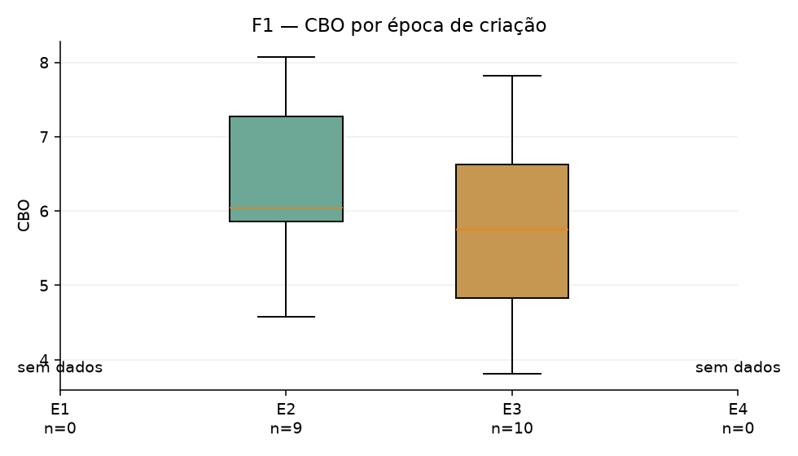
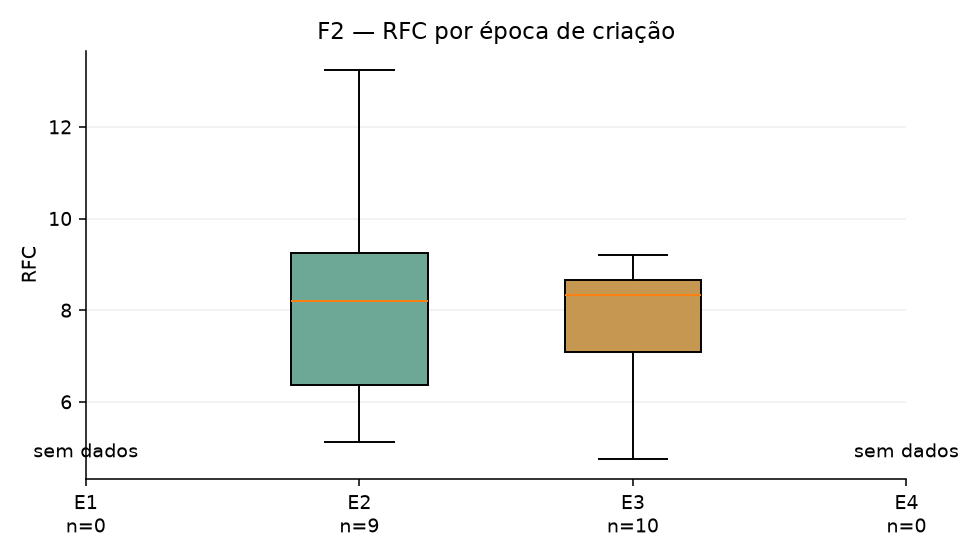
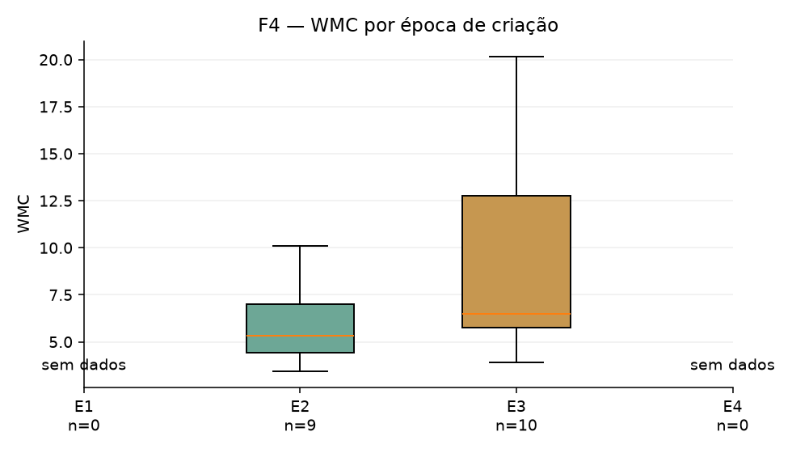
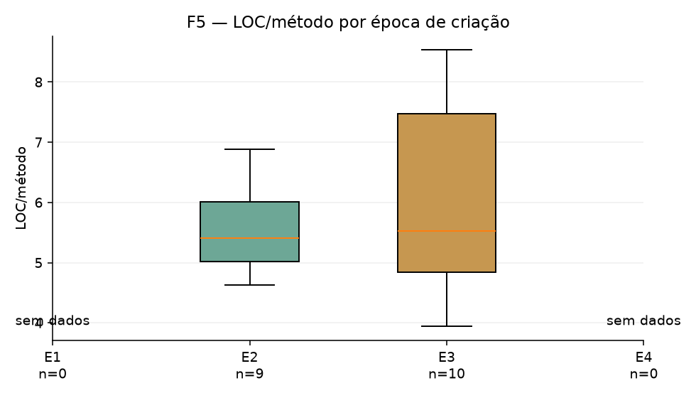
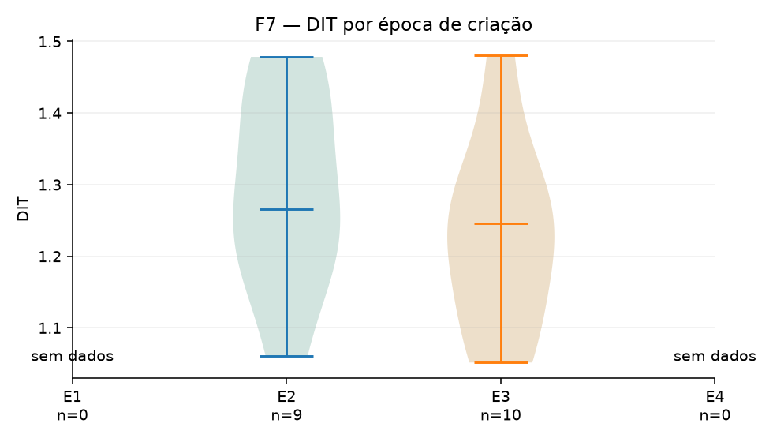
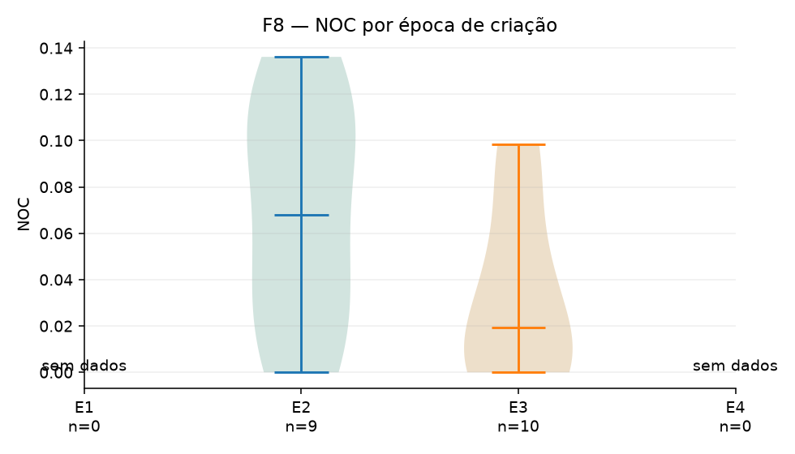
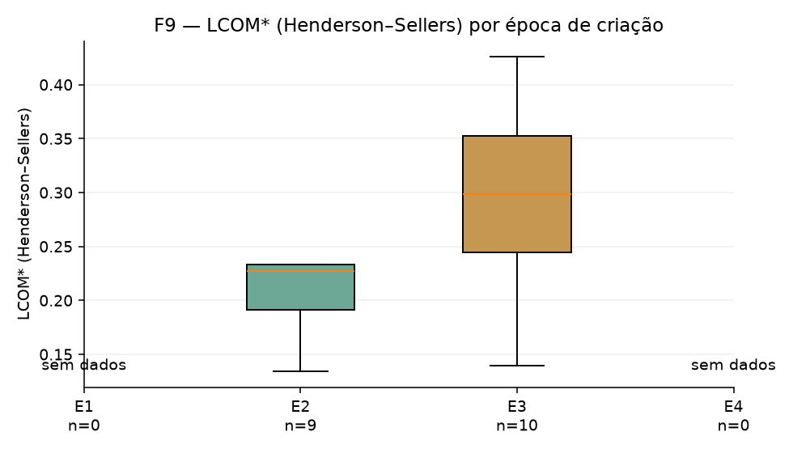
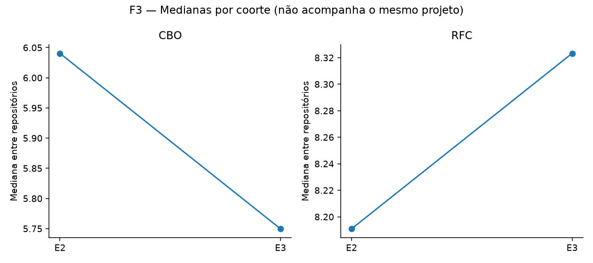
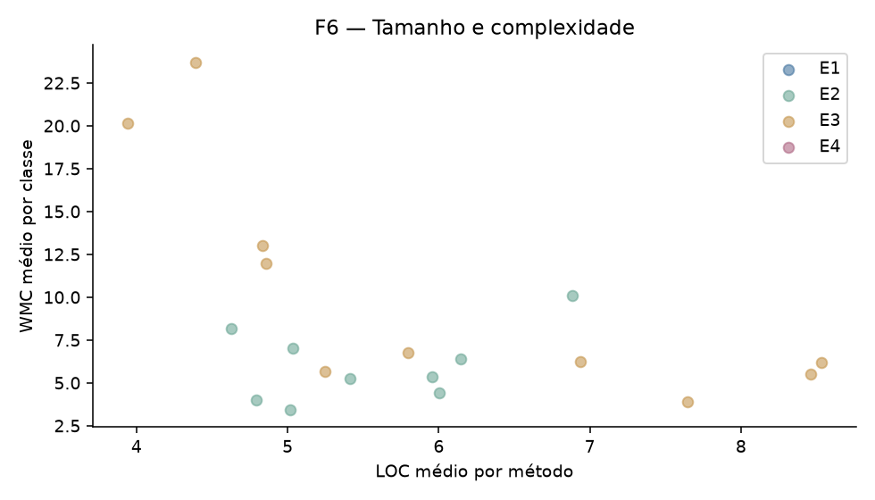
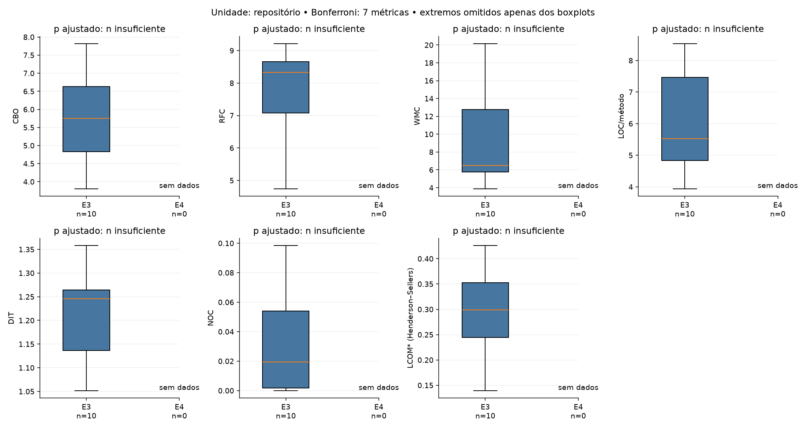
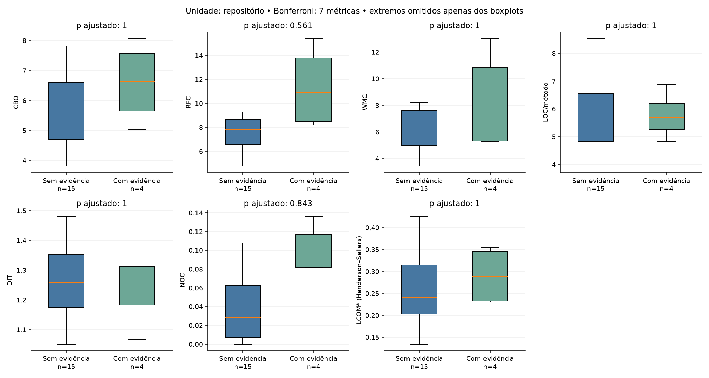
Todos os processados · Base comparativa / Power BI · Classificação IA · Falhas e exclusões · Configuração · Estado da coleta
Por repositório: result.json, class.csv.gz, method.csv.gz, source_inventory.csv.gz, ia_evidence.json, build_evidence.json, coverage.json e ck.log.